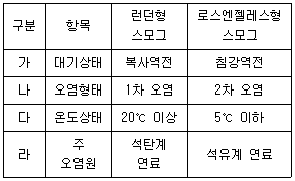

환경기능사 (2003-01-26 기출문제)
1과목: 대기오염방지
1. 링겔만 차트(Ringelman Chart)와 관련 있는 것은?
- 매연측정
- 오존검출
- 부유분진 농도측정
- 질소산화물의 성분분석
(정답률: 70%)

2. 대기오염물질 중 입자상물질을 처리할 수 있는 일반적인 집진장치 종류가 아닌 것은?
- 중력집진장치
- 세정집진장치
- 흡착집진장치
- 여과집진장치
(정답률: 46%)
3. 다음 중 배기가스에 포함되어 있는 황산화물의 제거 방법이 아닌 것은?
- 석회석에 의한 흡수법
- 활성탄에 의한 흡착법
- 산화마그네슘에 의한 흡습법
- 수소화탈황법
(정답률: 32%)
4. 대기오염 물질을 배출하는 굴뚝에서 유효고란 무엇을 말하는가?
- 지상에서 굴뚝 끝까지의 총 높이
- 굴뚝에서 대기의 안정층까지 높이
- 굴뚝높이와 연기의 수직상승 높이
- 지상에서 대기 안정층까지의 높이
(정답률: 51%)
5. 연료의 불완전 연소 시 주로 발생되는 물질은?
- CO
- SO2
- NO2
- H2O
(정답률: 60%)
6. 여과 집진장치의 여과포가 파손되었을 때 나타나는 현상으로 가장 적절한 것은?
- 출구의 먼지농도 증가 및 장치내의 압력강하
- 송풍기의 전류상승
- 집진장치 효율 증가
- 털어내기(탈락)후 압력이 규정치 이하로 내려가지 않음
(정답률: 55%)
7. 대류권에 존재하는 대기의 조성을 질소, 산소 기타물질로 분류하여 보았을 때, 질소:산소:기타물질의 실재조성비율에 가장 근접한 비율은?
- 20 : 79 : 1
- 31 : 68 : 1
- 78 : 21 : 1
- 81 : 18 : 1
(정답률: 67%)
8. 다음 대기오염물질 중 특정 대기유해물질이 아닌 것은?
- 브롬화합물
- 시안화수소
- 석면
- 염화비닐
(정답률: 37%)
9. 사이클론의 반지름이 16㎝, 유입가스의 처리속도가 3m/sec일 때 분리계수를 구하면?
- 5.21
- 5.74
- 5.85
- 5.93
(정답률: 44%)
10. 관성력 집진장치의 효율향상 조건 중에서 틀린 것은?
- 기류의 전환 횟수를 많게 한다.
- 기류의 방향 전환 각도를 작게 한다.
- 처리 후 출구 가스 속도를 높게 한다.
- dust box는 적당한 형상과 크기로 설치한다.
(정답률: 42%)
11. 다음 중 크기가 다른 압력은?
- 1atm
- 760mmHg
- 1,013mbar
- 1.013N/m2
(정답률: 65%)
12. 대기 환경기준을 나타내는 항목 중 PM10은 무엇을 의미 하는가?
- 공기역학적 직경이 10㎛ 미만인 입자
- 공기역학적 직경이 10㎛ 이상인 입자
- 공기역학적 직경이 10㎛ 미만인 가스
- 공기역학적 직경이 10㎛ 이상인 가스
(정답률: 61%)
13. 런던형 스모그와 로스엔젤레스형 스모그의 차이점을 비교한 항목 중에서 틀린 것은?

- 가
- 나
- 다
- 라
(정답률: 66%)
14. 질소 산화물을 촉매 환원법으로 처리할 때, 어떤 물질로 환원되는가?
- 질소
- 산소
- 탄화수소
- 이산화질소
(정답률: 63%)
15. 35℃, 750mmHg 상태에서 NO2 50g이 차지하는 부피는 몇 L인가? (단, NO2의 분자량은 46임)
- 22.4
- 25.6
- 27.8
- 29.2
(정답률: 42%)
2과목: 폐수처리
16. 활성오니공법에서 슬러지 반송의 주된 목적은?
- 영양물질 공급
- pH 조절
- DO 조절
- MLSS 조절
(정답률: 60%)
17. 폐수처리 과정 중 응집제를 넣어 완속교반을 하는 주된 목적은?
- 입지를 미세하게 하기 위하여
- 응집제를 확산시키기 위하여
- 응집제와 탁질입자의 접촉을 위하여
- 크고 무거운 floc을 만들기 위해
(정답률: 53%)
18. 다음은 수질 오염 지표에 관한 설명이다. 틀린 것은?
- pH : 산성 또는 알카리성의 정도
- SS : 수중에 부유하고 있는 물질량
- DO : 수중에 용해되어 있는 산소량
- COD : 생화학적 산소 요구량
(정답률: 57%)
19. 황산(1＋2)는 무엇을 의미하는가?
- 황산 1ml을 물에 희석하여 2ml로 한다.
- 황산 1ml와 물 2ml를 혼합한 용액
- 물 1ml에 황산 2ml를 혼합한 용액
- 물 1ml에 황산을 가하여 전체 2ml로 한다.
(정답률: 61%)
20. 하수처리장의 유입수가 BOD가 250ppm이고 유출수 BOD가 50ppm이였다면, 이 하수처리장의 BOD 제거율은?
- 50(%)
- 60(%)
- 70(%)
- 80(%)
(정답률: 48%)
21. 활성슬러지법은 여러 가지 변법이 개발되어 왔으며 각 방법은 특별한 운전이나 제거효율을 달성하기 위하여 발전되었다. 다음 중 활성슬러지법의 변법으로 볼 수 없는 것은?
- 계단식 포기법
- 접촉 안정법
- 장시간 포기법
- 살수 여상법
(정답률: 58%)
22. 포기조 내에서 활성슬러지법의 반응속도는 포기시간, 활성 슬러지의 미생물량, 영양물질 등의 인자에 의하여 좌우 된다. 포기조의 설계 및 유지관리의 지표로 사용하고 있는 F/M비의 계산공식은?
- F/M비 = (1일 포기조 유입량 × 포기조 유입수의 BOD 농도) / (포기조의 MLVSS 농도 × 포기조 용량)
- F/M비 = (포기조의 MLDO 농도 × 포기조 1일 유입량) / (포기조 용량)
- F/M비 = (1일 포기조 유입량 × 포기조 유입수의 SS 농도) / (포기조 용량)
- F/M비 = (포기조액의 SV30(mL/L) × 1000) / (포기조의 MLVSS 농도(mL/L))
(정답률: 47%)
23. 2g의 소금을 증류수에 녹여서 100mL의 소금물을 만든다면 소금물의 농도는?
- 200mg/L
- 2000mg/L
- 20,000mg/L
- 200,000mg/L
(정답률: 44%)
24. 폐수처리장의 최종침전지의 직경이 24m이고 유입평균 유량이 1.9×104m3/day일 때 침전지의 월류속도는?
- 45.02m3/m2d
- 42.04m3/m2d
- 33.60m3/m2d
- 26.27m3/m2d
(정답률: 48%)
25. 가로, 세로의 크기가 1.8m×2.4m이고, 유효깊이 0.5m인 약품혼화조가 6분 만에 채워지도록 설계되어 있다고 하면 본 약품혼화조로 유입되는 폐수의 유량은?
- 6L/s
- 8L/s
- 12L/s
- 4L/s
(정답률: 29%)
26. 폐수처리장의 최종방류수 유량이 5000m3/day이고 방류수의 부유물질(SS) 농도가 15mg/L일 때 하루에 배출되는 총고형 물질의 양은 얼마인가?
- 75kg
- 100kg
- 180kg
- 250kg
(정답률: 25%)
27. 활성슬러지공법으로 폐수처리 시 포기량 결정에 가장 관계가 깊은 인자는?
- pH
- SS
- BOD
- N, P
(정답률: 26%)
28. 일반도시 폐수처리에 이용되고 있는 활성슬러지법의 시설로 옳게 배열된 것은?
- 유입수 → 침사지 → 1차 침전지 → 포기조 → 최종 침전지 → 염소접촉조 → 유출수
- 유입수 → 침사지 → 1차 침전지 → 염소접촉조 → 포기조 → 최종침전지 → 접촉조 → 유출수
- 유입수 → 침사지 → 1차 침전지 → 최종침전지 → 염소접촉조 → 포기조 → 유출수
- 유입수 → 1차 침전지 → 침사지 → 포기조 → 최종 침전지 → 염소접촉조 → 유출수
(정답률: 56%)
29. 통상 BOD라고 하는 것은 20℃에서 몇 일간 해당 시료를 배양했을 때 소모된 산소량을 말하는가?
- 5일
- 10일
- 15일
- 20일
(정답률: 50%)
30. PCB의 우수한 성질을 이용하여 제조하였지만 환경오염 특히 인체에 미치는 영향이 커, 제조가 금지된 품목은?
- 전동기 시동유
- 변압기 절연유
- 콘덴서 접착유
- 형광등 가스 유입
(정답률: 36%)
31. 수질 오염의 지표 중 경도의 주 원인은?
- Ca2+, Mg2+
- Mg2+, Cd2+
- Fe2+, Pb2+
- Cu2+, Mn2+
(정답률: 64%)
32. 식물성 플랑크톤이라고 불리며 물속에서 광합성을 하는 것은?
- 균류
- 조류
- 박테리아
- 원생동물
(정답률: 45%)
33. 하천물에서 무엇이 관찰되면 비교적 깨끗한 상태라고 할 수 있는가?
- 유기물
- 박테리아
- 원생동물
- 바이러스
(정답률: 55%)
34. 일반침전지에서 부유물질의 침전속도가 감소되는 경우는?
- 폐수의 점도가 클 경우
- 부유물질의 입자가 클 경우
- 부유물질의 입자밀도가 클 경우
- 폐수의 밀도와 부유물질의 밀도차가 클 경우
(정답률: 47%)
35. 분뇨 정화조의 구조에 해당하는 것은?
- 라군
- 부패조
- 슬러지조
- 화전원판 생물막
(정답률: 43%)
3과목: 폐기물처리
36. 혐기성 소화법의 단점이 아닌 것은?
- 호기성 소화법에 비해 슬러지가 많이 발생한다.
- 소화 체류기간이 길다.
- 처리과정중 악취가 발생한다.
- 호기성 소화법에 비해 소화속도가 느리다.
(정답률: 43%)
37. 폐기물을 분석하기 위한 시료의 조제방법으로 알맞지 않는 것은?
- 구획법
- 원추4분법
- 교호삽법
- 면체분할법
(정답률: 62%)
38. 80%의 함수율을 가진 쓰레기를 건조시켜 함수율 40%로 하였다면 쓰레기 톤당 증발되는 수분량(Kg)은?
- 약 670
- 약 710
- 약 760
- 약 790
(정답률: 28%)
39. 폐기물 열분해에 관한 설명으로 알맞지 않은 것은?
- 부식문제와 생산된 기름의 저장성이 문제가 된다.
- 시설비와 운영비가 비싸다.
- 과잉공기 공급으로 인한 가스배출량이 많아진다.
- 기술적인 신뢰성이 부족하다.
(정답률: 44%)
40. 소각로 중 로타리킬른 방식의 장점이라 볼 수 없는 것은?
- 액상이나 고체상의 여러 종류를 한꺼번에 연소시킬 수 있다.
- 예열이나 혼합 등 전처리가 거의 필요 없다.
- 열효율이 높고 먼지발생량이 적다.
- 연소로 내에서 혼합이 잘 이루어진다.
(정답률: 47%)
41. 폐기물 처리를 비롯한 전체적인 관리 중 가장 많은 비용을 차지하는 부분은?
- 수거
- 압축
- 파쇄
- 소각
(정답률: 63%)
42. 다음 중 고체 폐기물의 파쇄 목적이 아닌 것은?
- 유가물의 회수용이
- 입자크기의 균일화
- 소각 시 연소촉진
- 비표면적 감소
(정답률: 51%)
43. 탄소, 수소, 산소 및 황의 함유량이 각각 85%, 5%, 8%, 2%인 중유를 연소시킬 때 필요한 이론 공기량은? (단, 공기 중의 산소는 부피 비율로 0.21%이다.)
- 6.12 Sm3/kg
- 7.32 Sm3/kg
- 8.69 Sm3/kg
- 9.97 Sm3/kg
(정답률: 42%)
44. 사용하는 자원에 의해 환경에 미치는 각종부하를 생산, 유통, 사용, 폐기 등의 모든 과정에 걸쳐 정량적으로 분석하여 자원의 고갈과 지구환경 문제를 근본적으로 해결하기 위한 각종 개선방안을 모색하는 체계적인 과정은?
- 전과정평가(life cycle assessmemt)
- 환경영향평가(Environment impact assessmemt)
- 환경오염부하(Environment pollution load)
- 자원주기평가(law cycle assessmemt)
(정답률: 33%)
45. 공정시험방법에서 '방울수'라 함은 20℃에서 정제수 몇 방울이 1mL가 되는 것을 의미하는가?
- 10
- 15
- 20
- 25
(정답률: 64%)
46. 다음 중 유해 폐기물의 국가 간 이동 및 처리의 규제를 채택한 회의는?
- 몬트리올의정서
- 바젤협약
- 리우선언
- 그린라운드
(정답률: 69%)
47. 어느 도시에서 1년간 쓰레기 수거량은 3,400,000톤이다. 이 쓰레기를 5500명이 하루 8시간씩 수거하였다면 수거능력(MHT)은? (단, 1년간 작업일수는 310일이다.)
- 4.01
- 3.37
- 2.72
- 2.15
(정답률: 43%)
48. 쓰레기 발생량에 영향을 미치는 일반적인 요인을 설명한 것으로 옳은 것은?
- 쓰레기의 성분은 계절에 영향을 받는다.
- 수거빈도와 발생량은 반비례한다.
- 쓰레기통이 클수록 발생량이 감소한다.
- 재활용율이 높을수록 발생량이 증가한다.
(정답률: 62%)
49. 어느 도시의 쓰레기를 분석한 결과 밀도는 450kg/m3이고, 비가연성 물질의 질량백분율은 72%였다. 이 쓰레기 10m3중에 함유된 가연성 물질의 질량은?
- 1180kg
- 1260kg
- 1310kg
- 1460kg
(정답률: 49%)
50. 폐기물의 새로운 수단인 파이프라인 수송의 단점이 아닌 것은?
- 잘못 투입된 물건의 회수 곤란
- 파쇄, 압축 시설의 필요
- 장거리 수송의 곤란
- 폐기물 발생 밀도가 높은 곳은 사용 불가능
(정답률: 48%)
51. 도시 폐기물을 소각하는 방식으로 널리 사용되고 있으며 체류시간이 길고 교반력이 약하여 국부가열의 우려가 있는 소각로는?
- 유동층 소각로
- 회전로 소각로
- 화격자 소각로
- 액체주입형 소각로
(정답률: 56%)
52. 고농도의 중금속 함유 폐기물의 처리에 적합한 방법으로 포틀랜드 시멘트를 이용하여 고형화 하는 것은?
- 석회기초법
- 피막형성법
- 시멘트기초법
- 자가시멘트법
(정답률: 70%)
53. 우리나라 폐기물을 최종 처리하는 방법 중 가장 큰 비중을 차지하는 것은?
- 매립
- 소각
- 재활용
- 해양투기
(정답률: 61%)
54. 쓰레기를 압축시켜 용적 감소율이 40%일 때 압축비는?
- 1.21
- 1.45
- 1.67
- 1.85
(정답률: 47%)
55. 유동상 소각로에서 유동상의 매질이 갖추어야 할 조건이 아닌 것은?
- 불활성
- 낮은 융점
- 내마모성
- 작은 비중
(정답률: 49%)
4과목: 소음 진동학
56. 음의 용어 및 성질에 관한 설명으로 알맞지 않은 것은?
- 음선 : 음의 진행방향을 나타내는 선으로 파면에 수평 하다.
- 음파 : 매질 개개의 입자가 파동이 진행하는 방향의 앞뒤로 진동하는 종파이다.
- 파동 : 매질 자체가 이동하는 것이 아니라 매질의 변형 운동으로 이루어지는 에너지 전달을 말한다.
- 파면 : 파동의 위상이 같은 점들을 연결한 면이다.
(정답률: 32%)
57. 소음 용어에 대해 바르게 짝지어진 것은?
- SIL - 항공기 소음 평가
- TNI - 도로교통소음지수
- NNI - 회화방해레벨
- NC - 명료지수
(정답률: 48%)
58. 공기 스프링에 관한 설명 중 틀린 것은?
- 설계 시 스프링의 높이, 스프링정수를 각각 독립적으로 광범위하게 설정할 수 있다.
- 사용진폭이 작아 댐퍼가 필요한 경우가 적다.
- 부하능력이 광범위하다.
- 자동제어가 가능하다.
(정답률: 47%)
59. 진동수가 100Hz이고, 속도가 20m/s인 파동의 파장은?
- 0.2m
- 0.5m
- 2.0m
- 5.0m
(정답률: 31%)
60. 벽 뒤에 있는 사람은 보이지 않으나 말소리를 들을 수 있다든지, 실제로 경적이 울릴 때 건물의 모서리를 보면 차는 보이지 않으나 소리를 들을 수 있는 것은 음의 어떤 특성 때문인가?
- 음의 반사
- 음의 굴절
- 음의 회절
- 음의 투과
(정답률: 57%)